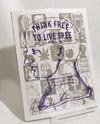

Get Claire Wolfe's Think Free to Live Free from Laissez Faire Books
|
Opting in, and elections Dear Advisor, I believe strongly in libertarianism and minarchy, but I also believe in the value of being engaged in public life. I do not think that going off the radar, evading the "authorities", will help anyone in the struggle for freedom or independence. I love politics, and I want to be involved. I have considered joining a party and running for a legislative office of some kind, from which I could truly make a difference. But how can I do that effectively (I mean actually winning elections, not just being on the ballot) in the face of a tyrannical majority which supports the fascist-collectivist system that we are now living under? Should I just bite my tounge [sic] and be "moderate", gently easing the nation towards liberty while making enough concessions to appease the centrist voters? Or would that make me another dispicable [sic] part of the problem?
Sincerely, Dear Wannabe, Oh, the openings you've provided! We'll have to take this one step at a time, and rather more briefly than we'd like here, so consider this a start. "I believe strongly in libertarianism and minarchy, but I also believe in the value of being engaged in public life." Interesting conjunction there ... why do you think those are mutually exclusive? Many pro-freedom individuals are engaged in public life -- and lots of them are far removed from the Libertarian Party or other electoral political actions. "I do not think that going off the radar, evading the "authorities", will help anyone in the struggle for freedom or independence." We respectfully disagree on this point, then. "I have considered joining a party and running for a legislative office of some kind ... . But how can I do that effectively ... in the face of a tyrannical majority which supports the fascist-collectivist system that we are now living under?" Good question, isn't it? Do you really think that the tyrannical majority wants to share the power they've built up? Do you really think they want to share that power with someone who wants to do away with them? In our opinion, the current electoral political process in the United States is so corrupt, and so corrupted by those who use it, that it's no longer serving its intended purpose. That goes for local, state, and federal levels, with some exceptions. The electoral political process concentrates power in the hands of those who want to rule -- and it gives them a powerful club to rule with. Behind each law is the (sometimes) unstated threat of force: "Obey us or we will hurt or kill you." Do you think it's a coincidence that more and more feral agents (not a typo), including Park Service rangers, FDA inspectors, and EPA agents, are wearing sidearms? Winning elections is not an effective strategy for securing greater freedom. Yes, some libertarian candidates (whether of the LP or not) do win elections, and some do manage to stem freedom's bleeding while in office. But more often, they're ineffectual because they're blocked by opposition from all sides; others become altered by the electoral process and become a servant to that power they claimed not to want. That's the heart of the matter: elections by definition force some individuals to choose whether or not to comply with laws and rulers they don't agree with. "Should I just bite my tounge [sic] and be "moderate", gently easing the nation towards liberty while making enough concessions to appease the centrist voters? Or would that make me another dispicable [sic] part of the problem?" Our response above has implicitly given the answer to this question, but just to be clear: Yes, you would be part of the problem. No matter what approach you might take, the fact that you would be exercising control over nonconsenting individuals in the form of electoral political power means you would be acting against the freedom you claim to want to advance. So ... do we have some advice for you? Sure we do! Look up the term "politics" in your dictionary. You ought to find that the term covers much more than the "electoral politics" flavor that most people think of as the be-all and end-all of political action. It's a small part of the realm of political action, in truth. Many are discovering that there are other, more effective ways of effecting political change than by getting elected. We're confident you can find a satisfying way to advance liberty -- really advance it, not just give the cause lip service -- without setting foot in the electoral circus ring. Who knows, you might just find that you come to agree with us that shrugging off the jackboots and their dicta is an effective means of advancing freedom. Be free, friend.
Patriotism vs. Freedom? I just recently discovered "Doing Freedom" and am so happy to find it! This is the kind of information all freedom-loving people need. I'm trying to do alot [sic] of the things you all suggest, but all this patriotic crap after Sep. 11 is making me crazy! Not to mention the stupid "patriot" act. How can a person be free these days??
Thanks, Hi DSS, We're glad you're finding value in DF!; it's our mission to provide practical, useful information on how to do freedom. Your question is one many people are asking these days, and while we don't have all the answers, we hope to provide some information, and at the very least some reassurance. First, it's important to keep in mind that 911 (as we like to refer to it) was a setback for freedom in some ways, but not all. Much of the initial patriotism and "support" for the state and its increasingly intrusive policies has evaporated. What that means for the Homeland Security office, the TIPS snitch program, and similar USNAZI programs remains to be seen, but you can be sure they won't go unchallenged. The most obvious way 911 helped liberty was to get people thinking about their own safety, and buying firearms. Even many sheeple have realized that Big Daddy gummint can't protect them, and that they need to take responsibility for their own safety, at least on some level. That's a big step forward! Also encouraging is the recent movement to scale back very restrictive antigun laws in Taxachusetts. RKBA is a very important issue, and we're gaining ground on that one. (For more information, please see Sunni Maravillosa's articles on buying and using guns for self defense.) If you don't already own a firearm, research them and buy at least one (two -- a handgun and a long gun -- would be much better). If you already own one, get solid defensive training with it (this isn't the same as target-shooting practice), and then practice the techniques you learn regularly. This will help protect you against bad guys of all sorts. Learn to question all threats to your privacy and security, if you don't already do so. Instead of having a fear response when the jackboots approach you, develop an anger response. It's more appropriate, after all -- more often than not their purpose is to intimidate and harass, which takes your valuable time -- and it will enable you to make a strong response. That response should be along the lines of, "Not without a warrant, you don't!" if they're asking for access, or "I don't give out that information" if they want an SSN or some other personal information on a form. You may be denied the service, of course, but unless the busybodies have a monopoly, you almost certainly can get it elsewhere. The jackboots aren't used to challenges to their authority, so they frequently cave when someone with knowledge of relevant laws and the Constitution calls their bluff. Refuse to be intimidated by those who claim to rule us, and their power evaporates like fog in the bright morning sunshine. If you don't already have one, develop a network of pro-freedom individuals whom you can count on for help. So far the Thought Police haven't targeted liberty activists, but that could change. If they come for you, you'll need to have a GOOD ("Get Out of Dodge") plan already in place. Building an informal underground railroad is an essential aspect of anyone's freedom plan these days. Absent needing it for getting out of town, it will be an invaluable source of information, support, and whatever else your friends might be able to provide (like grey market goods and services among pro-freedom individuals). A person can be free by deciding to be free, and living in accordance with the freedom he or she wants. This can take many forms: quietly slipping off the state's radar screens; any of a number of PT (permanent tourist or perpetual traveler) strategies; civil disobedience and other forms of protest while still in the system to some degree; or public activism designed to directly challenge the state's authority. The point is, an individual still has -- and always has had -- the power to choose to submit to some amount of statist coercion and intervention. If you can remove the chains you've put upon yourself (as all people have done), you will find a lot of freedom in that one act. From there your choices are varied, as our examples show. Your given situation and comfort level will influence your decision-making. It does look like dark days ahead for freedom. That's one view. Another is that by grabbing so greedily at more power and control, the state is tipping its hand as to its ultimate goal. At some point, many among the sheeple will realize this and begin to resist, with the inevitable outcome (at least in the United States, where the legacy of freedom exists and still means something) being more freedom. How long that might take is anyone's guess. Both views have merit. Freedom is under attack right now. But if that is to change, individuals must take strong, principled action against it. By doing so, we are doing freedom and giving others the courage to follow suit. Are you familiar with the phrase, "Mind your pennies and the dollars will take care of themselves"? That applies to individual freedoms, too. These do seem like insane times -- "the times that try men's souls" -- but it's in the darkest times that the lone candle shines brightest.
Send your questions to The Freedom Advisor. Unless requested otherwise, all replies will be published here in Doing Freedom!.
Did you like this column? |